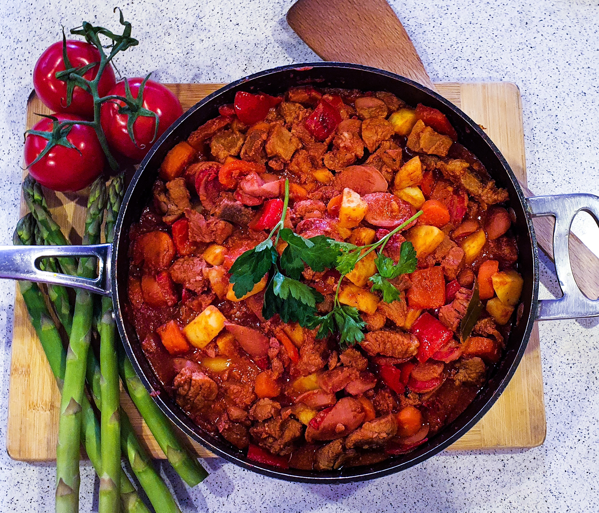

Home
Menudo

The Strengthy Ulam. Bold and rich, in flavors, and nutrients, it is a fortifying dish to munch on.
Ingredients
Below are the ingredients you need to cook your own delicious Fortifying Menudo
- 1 Lemon
- Patis (Fish Sauce)
- 1 kilo Pork/pork ribs, cut into cubes, marinated in lemon, and patis
- 3 medium sized Onions, diced
- 3 cloves of Garlic
- Pepper
- Salt
- Soy Sauce
- 3 pieces big Potatoes, sliced
- 2-3 pieces Carrots
- 1 Red Bell Pepper
- Tomato sauce
- Oil
- 4 or 5 bay leaves
- Tomato Paste
- Hotdog
- Liver spread
Procedures
Below are the following steps to take the ingredients above, and perfectly concoct the Strengthy dish that is Menudo
- Brown the carrots, potatoes & bell pepper - put aside
- Brown the hotdog - put aside
- Saute Garlic & Onion
- Saute Tomato Paste with Garlic and Onion until slightly toasted
- Add Marinated Pork for 10 minutes
- Add Tomato sauce
- Add Bay Leaves
- Season with Salt and Pepper
- Put Liver spread
- Cook altogether until meat is tender
- Then add you Vegetables & hotdog (the one's you put aside)